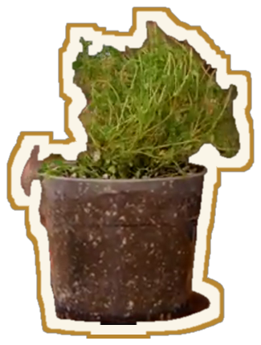
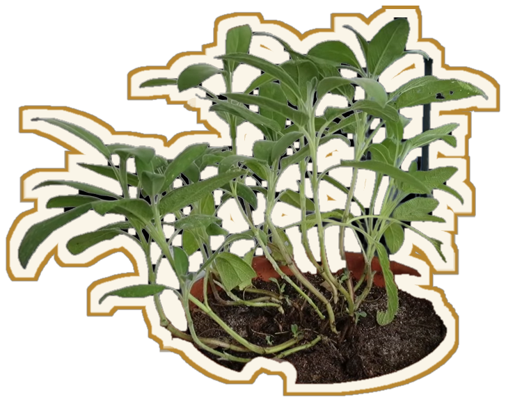
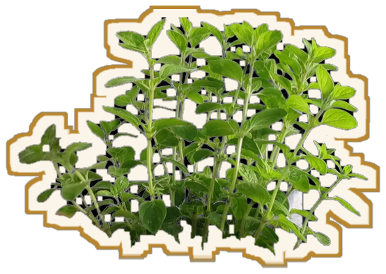
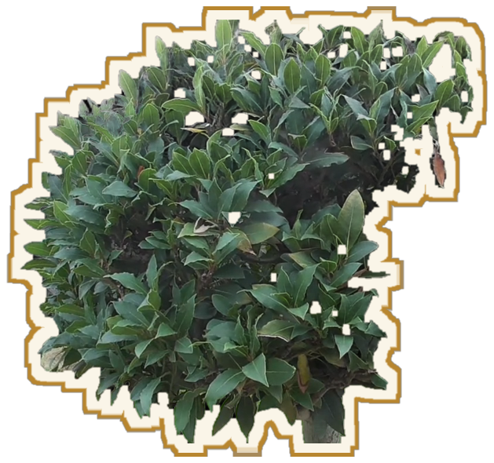

Bevor wir zu den Pflanzen gehen
Die eine Sache
… und Sie verstehen die Hälfte
Mittelmeer
zu uns
Sie kommen aus dem Süden




Thymian
Salbei
Oregano
Lorbeer
trockene, steinige Hänge
das Wasser läuft sofort ab
mit wenig leben
ätherische Öle
ein Blatt zwischen den Fingern reiben
Schutz gegen die Hitze
Wurzeln faulen
nicht am Frost
am nassen Fuß
Merken Sie sich das
zu viel Wasser – nicht zu wenig
Die Bodenmüdigkeit
Jahr 1
Jahr 2
Jahr 3
Jahr 4
jedes Jahr dasselbe
Sonntag
der Boden ruht
Das ist das Ganze
Licht
Wasser
Ruhe
der Rest ist nur noch die einzelne Pflanze